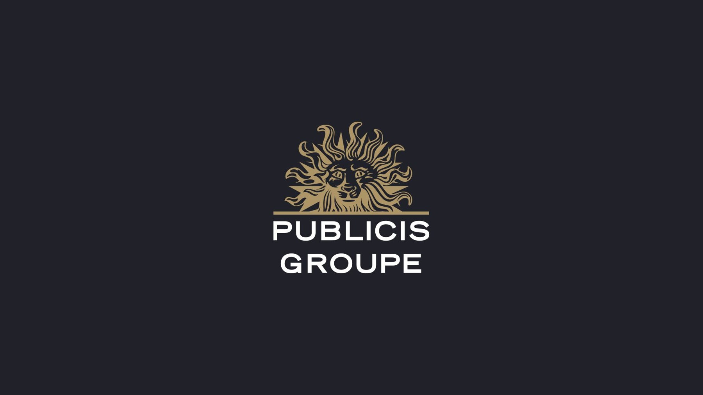

Field notes / 2024–2025
Publicis Middle East
A chapter in communications and project management, working with the Nestlé account at Publicis Middle East.

Field notes / 2024–2025
A chapter in communications and project management, working with the Nestlé account at Publicis Middle East.
